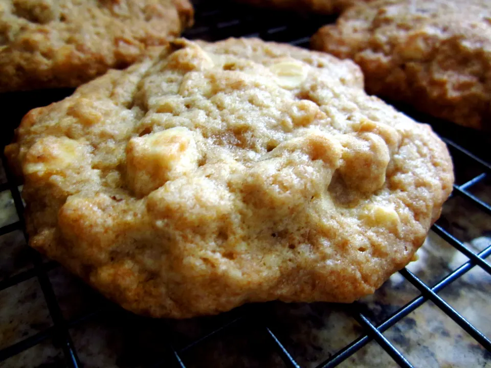

Banana Nut Cookies
Source: “Banana Nut Cookies” from Mrs. Fields Cookie Book
Yield: 4 dozen cookies
Ingredients
- 2 ⅔ cups all-purpose flour
- ½ tsp baking soda
- ¼ tsp salt
- 1 cup light brown sugar, firmly packed
- ½ cup white sugar
- 1 cup salted butter, softened
- 1 large egg
- 1 tsp creme de banana liqueur or pure banana extract
- ¾ cup (1 medium) mashed ripe banana
- 2 cups semisweet chocolate chips
- 1 cup chopped walnuts
Instructions
- Preheat oven to 300F.
- In medium bowl combine flour, soda and salt. Mix well with a wire whisk. Set aside.
- In large bowl with an electric mixer blend sugars at medium speed. Add butter and mix to form a grainy paste, scraping down the sides of the bowl. Add egg, liqueur and banana, and beat at medium speed until smooth.
- Add the flour mixture, 1 cup of the chocolate chips and the walnuts, and blend at low speed until just combined. Do not overmix.
- Drop by rounded tablespoons onto ungreased cookie sheets, 2 inches apart. Sprinkle cookies with chocolate chips, 6 to 8 per cookie. Bake 25-27 minutes or until cookie edges begin to brown. Transfer immediately to a cool surface with a spatula.